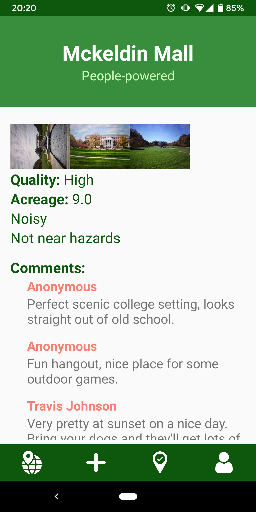
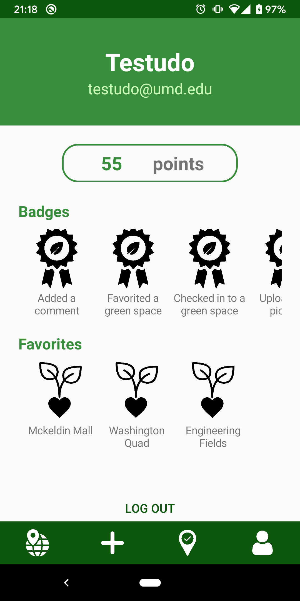
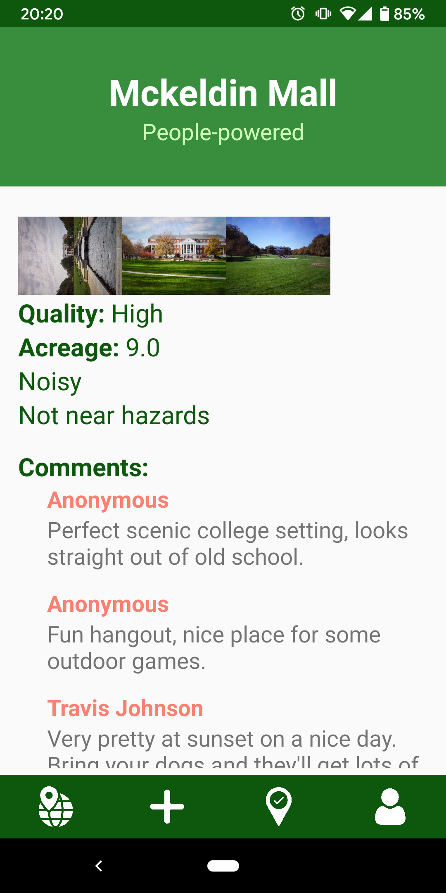
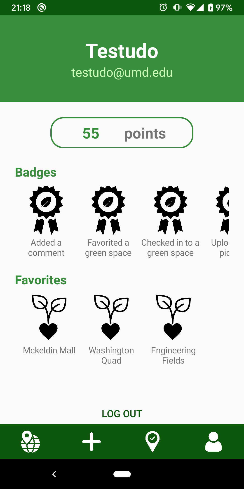

GREEN SPACE AUDIT
About
Green Space Audit is an application designed to help users learn about the green spaces around them. Users can explore
green spaces on the map, check in to green spaces they visit, comment and rate spaces they check in to, and add new
green spaces. Think yelp, but for fields and parks. Users are also rewarded for visiting green spaces and for
contributing to the community by adding a space or commenting on one. If a user is an administrator, then they can also
view data analytics of the green spaces.
Screenshots
PUT HOME PAGE HERE

 


